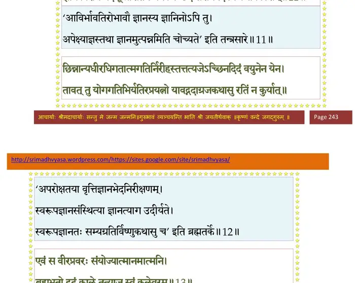
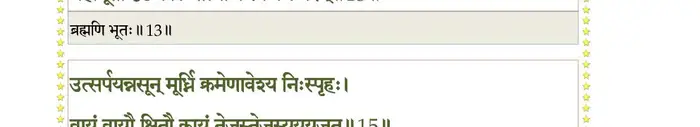
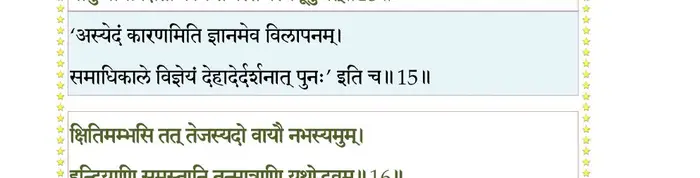
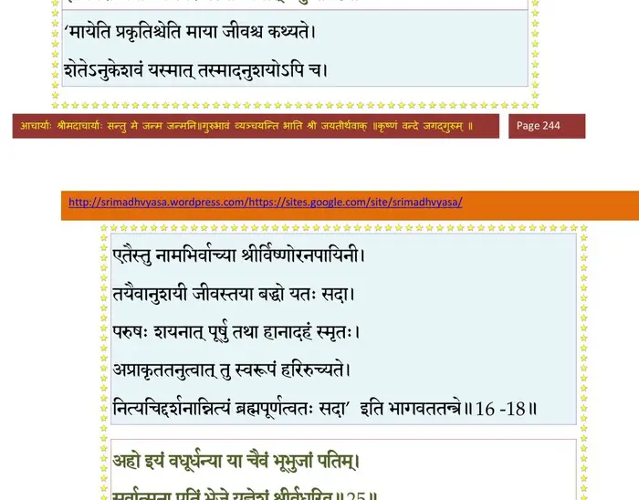
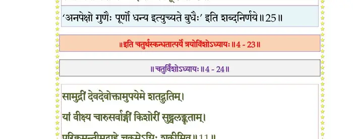

स्कन्ध 4 · अध्याय 23
श्लोक १
मैत्रेय उवाच–
दृष्ट्वाऽऽत्मानं प्रवयसमेकदा वैन्य आत्मवान् ।
आत्मना वर्धिताशेषसानुसर्गः प्रजापतिः।। १ ।।
दृष्ट्वाऽऽत्मानं प्रवयसमेकदा वैन्य आत्मवान् ।
आत्मना वर्धिताशेषसानुसर्गः प्रजापतिः।। १ ।।
श्लोक २
जगतस्तस्थुषश्चापि वृत्तिदो धर्मभृत् सताम् ।
निष्पादितेश्वरादेशो यदर्थमिह जग्मिवान्।। २ ।।
निष्पादितेश्वरादेशो यदर्थमिह जग्मिवान्।। २ ।।
श्लोक ३
आत्मजेष्वात्मजां न्यस्य विरहाद् रुदतीमिव ।
प्रजासु विमनास्वेकः सदारोऽगात् तपोवनम्।। ३ ।।
प्रजासु विमनास्वेकः सदारोऽगात् तपोवनम्।। ३ ।।
श्लोक ४
तत्रापाद्यात्मनियमो वैखानससुसम्मते ।
आरब्ध उग्रतपसि यथा स्वविषये पुरा।। ४ ।।
आरब्ध उग्रतपसि यथा स्वविषये पुरा।। ४ ।।
श्लोक ५
कन्दमूलफलाहारः शुष्कपर्णाशनः क्वचित् ।
अब्भक्षः कतिचित्पक्षान् वायुभक्षस्ततः परम्।। ५ ।।
अब्भक्षः कतिचित्पक्षान् वायुभक्षस्ततः परम्।। ५ ।।
श्लोक ६
ग्रीष्मे पञ्चतपा वीरो वर्षास्वासारषाण्मुनिः ।
आकण्ठमग्नः शिशिर उदके स्थण्डिलेशयः।। ६ ।।
आकण्ठमग्नः शिशिर उदके स्थण्डिलेशयः।। ६ ।।
श्लोक ७
तितिक्षुर्यतवाग् दान्त ऊर्ध्वरेता जितानिलः ।
आरिराधयिषुः कृष्णमाचरत् तप उत्तमम्।। ७ ।।
आरिराधयिषुः कृष्णमाचरत् तप उत्तमम्।। ७ ।।
श्लोक ८
तेन क्रमानुसिद्धेन ध्वस्तकर्मामलाशयः ।
प्राणायामैः सन्निरुद्धषड्वर्गच्छिन्नबन्धनः।। ८ ।।
प्राणायामैः सन्निरुद्धषड्वर्गच्छिन्नबन्धनः।। ८ ।।
श्लोक ९
सनत्कुमारो भगवान् यदाहाध्यात्मिकं परम् ।
योगं तेनैव पुरुषमभजत् पुरुषर्षभः।। ९ ।।
योगं तेनैव पुरुषमभजत् पुरुषर्षभः।। ९ ।।
श्लोक १०
भगवद्धर्मिणः साधो श्रद्धया यततः सदा ।
भक्तिर्भगवति ब्रह्मण्यनन्यविषयाऽभवत्।। १० ।।
भक्तिर्भगवति ब्रह्मण्यनन्यविषयाऽभवत्।। १० ।।
श्लोक ११
तस्यानया भगवतः परिशुद्धकर्मसत्वात्मनस्तदनु संस्मरणानुपूर्व्या ।
ज्ञानं विरक्तिमदभून्निशितेन येन चिच्छेद संशयपदं निजजीवकोशम् ।। ११ ।।
ज्ञानं विरक्तिमदभून्निशितेन येन चिच्छेद संशयपदं निजजीवकोशम् ।। ११ ।।
भागवततात्पर्यनिर्णय

श्लोक १२
छिन्नान्यधीरधिगतात्मगतिर्निरीहस्तत् तत्यजेऽच्छिनदिदं वयुनेन येन ।
तावन्न योगगतिभिर्यतिरप्रयत्नो यावद् गदाग्रजकथासु रतिं न कुर्यात्।। १२ ।।
तावन्न योगगतिभिर्यतिरप्रयत्नो यावद् गदाग्रजकथासु रतिं न कुर्यात्।। १२ ।।
श्लोक १३
एवं स वीरप्रवरः संयोज्यात्मानमात्मनि ।
ब्रह्मभूतो दृढं काले तत्याज स्वकलेवरम्।। १३ ।।
ब्रह्मभूतो दृढं काले तत्याज स्वकलेवरम्।। १३ ।।
भागवततात्पर्यनिर्णय

श्लोक १४
सम्पीड्य पायुं पार्ष्णिभ्यां वायुमुत्सर्पयञ्छनैः ।
नाभ्यां कोष्ठेष्ववस्थाप्य हृदुरःकण्ठशीर्षणि।। १४ ।।
नाभ्यां कोष्ठेष्ववस्थाप्य हृदुरःकण्ठशीर्षणि।। १४ ।।
श्लोक १५
उत्सर्पयन्नसुं मूधर्ि्न क्रमेणावेश्य निस्स्पृहः ।
वायुं वायौ क्षितौ कायं तेजस्तेजस्ययूयुजत्।। १५ ।।
वायुं वायौ क्षितौ कायं तेजस्तेजस्ययूयुजत्।। १५ ।।
भागवततात्पर्यनिर्णय

श्लोक १६
खान्याकाशे द्रवं तोये यथास्थानं विभागशः ।
क्षितिमम्भसि तत् तेजस्यदो वायौ नभस्यमुम्।। १६ ।।
क्षितिमम्भसि तत् तेजस्यदो वायौ नभस्यमुम्।। १६ ।।
श्लोक १७
इन्द्रियाणि समस्तानि तन्मात्राणि यथोद्भवम् ।
भूतादिस्तान् समुत्क्षिप्य महत्यात्मनि सन्दधे।। १७ ।।
भूतादिस्तान् समुत्क्षिप्य महत्यात्मनि सन्दधे।। १७ ।।
भागवततात्पर्यनिर्णय
श्लोक १८
तं सर्वगुणविन्यासं जीवे मायामये न्यधात् ।
तं चानुशयमात्मस्थमसावनुशयी पुमान् ।
ज्ञानवैराग्यवीर्येण स्वरूपस्थो व्यधात् प्रभुः।। १८ ।।
तं चानुशयमात्मस्थमसावनुशयी पुमान् ।
ज्ञानवैराग्यवीर्येण स्वरूपस्थो व्यधात् प्रभुः।। १८ ।।
भागवततात्पर्यनिर्णय

श्लोक १९
अर्चिर्नाम महाराज्ञी तत्पत्न्यनुगता वनम् ।
सुकुमार्यतदर्हा च यत् पद्भ्यां स्पर्शनं भुवः।। १९ ।।
सुकुमार्यतदर्हा च यत् पद्भ्यां स्पर्शनं भुवः।। १९ ।।
श्लोक २०
अतीव भर्तुर्व्रतधर्मनिष्ठया शुश्रूषया चार्षदेहयात्रया ।
नाविन्दतार्तिं व्रतकर्शिताऽपि सा प्रेयस्करस्पर्शनमाननिर्वृता।। २० ।।
नाविन्दतार्तिं व्रतकर्शिताऽपि सा प्रेयस्करस्पर्शनमाननिर्वृता।। २० ।।
श्लोक २२
देहं विपन्नाखिलचेतनादिकं पत्युः पृथिव्या दयितस्य चात्मनः ।
आलक्ष्य किञ्चिच्च विलप्य सा सती चितामथारोपयदद्रिसानुनि।। २१
विधाय कृत्यं ह्रदिनीजलाप्लुता दत्वोदकं भर्तुरुदारकर्मणः ।
नत्वा दिविस्थांस्त्रिदशांस्त्रिः परीत्य विवेश वह्निं ध्यायती भर्तृपादम् ।। २२ ।।
आलक्ष्य किञ्चिच्च विलप्य सा सती चितामथारोपयदद्रिसानुनि।। २१
विधाय कृत्यं ह्रदिनीजलाप्लुता दत्वोदकं भर्तुरुदारकर्मणः ।
नत्वा दिविस्थांस्त्रिदशांस्त्रिः परीत्य विवेश वह्निं ध्यायती भर्तृपादम् ।। २२ ।।
श्लोक २३
विलोक्यानुगतां साध्वीं पृथुं वीरवरं पतिम् ।
तुष्टुवुर्वरदा देवैर्देवपत्न्यः सहस्रशः।। २३ ।।
तुष्टुवुर्वरदा देवैर्देवपत्न्यः सहस्रशः।। २३ ।।
श्लोक २४
कुर्वन्त्यः कुसुमासारं तस्मिन् मन्दरसानुनि ।
नदत्स्वमरतूर्येषु गृणन्ति स्म परस्परम्।। २४ ।।
नदत्स्वमरतूर्येषु गृणन्ति स्म परस्परम्।। २४ ।।
श्लोक २५
देव्य ऊचुः –
अहो इयं वधूर्धन्या या चैवं भूभुजां पतिम् ।
सर्वात्मना पतिं भेजे यज्ञेशं श्रीवधूरिव।। २५ ।।
अहो इयं वधूर्धन्या या चैवं भूभुजां पतिम् ।
सर्वात्मना पतिं भेजे यज्ञेशं श्रीवधूरिव।। २५ ।।
भागवततात्पर्यनिर्णय

श्लोक २६
सैषा नूनं व्रजत्यूर्ध्वमनुवैन्यं पतिं सती ।
पश्यतोऽस्मानतीत्यार्चिर्दुर्विभाव्येन कर्मणा।। २६ ।।
पश्यतोऽस्मानतीत्यार्चिर्दुर्विभाव्येन कर्मणा।। २६ ।।
श्लोक २७
तेषां दुरापं किन्त्वन्यन्मर्त्यानां भगवत्पदम् ।
विद्युल्लोलायुषो ये वै नैष्कर्म्यं साधयन्त्युत।। २७ ।।
विद्युल्लोलायुषो ये वै नैष्कर्म्यं साधयन्त्युत।। २७ ।।
श्लोक २८
स वञ्चितो बतात्मध्रुक् कृच्छ्रेण महता भुवि ।
लब्ध्वाऽऽपवर्ग्यं मानुष्यं विषयेषु विषज्जते।। २८ ।।
लब्ध्वाऽऽपवर्ग्यं मानुष्यं विषयेषु विषज्जते।। २८ ।।
श्लोक २९
मैत्रेय उवाच–
स्तुवन्तीष्वमरस्त्रीषु पतिलोकं गता वधूः ।
यं वा आत्मविदां धुर्यो वैन्यः प्रापाच्युताशयः।। २९ ।।
स्तुवन्तीष्वमरस्त्रीषु पतिलोकं गता वधूः ।
यं वा आत्मविदां धुर्यो वैन्यः प्रापाच्युताशयः।। २९ ।।
श्लोक ३०
इत्थम्भूतानुभावोऽसौ पृथुः स भगवत्तमः ।
कीर्तितं तस्य चरितमुद्दामचरितस्य वै।। ३० ।।
कीर्तितं तस्य चरितमुद्दामचरितस्य वै।। ३० ।।
श्लोक ३१
य इदं सुमहत्पुण्यं श्रद्धयाऽवहितः पठेत् ।
श्रावयेत् श्रुणुयाद् वाऽपि स पृथोः पदवीमियात्।। ३१ ।।
श्रावयेत् श्रुणुयाद् वाऽपि स पृथोः पदवीमियात्।। ३१ ।।
श्लोक ३२
ब्राह्मणो ब्रह्मवर्चस्वी राजन्यो जगतीपतिः ।
वैश्यः पठन् विश्पतिः स्याच्छूद्र उत्तमतामियात्।। ३२ ।।
वैश्यः पठन् विश्पतिः स्याच्छूद्र उत्तमतामियात्।। ३२ ।।
श्लोक ३३
त्रिःकृत्व इदमाकर्ण्य नरो नार्यथवाऽऽदृतः ।
अप्रजः सुप्रजतमो निर्धनो धनवत्तमः।। ३३ ।।
अप्रजः सुप्रजतमो निर्धनो धनवत्तमः।। ३३ ।।
श्लोक ३४
इदं स्वस्त्ययनं पुंसाममङ्गल्यनिवारणम् ।
धन्यं यशस्यमायुष्यं स्वर्ग्यं कलिमलापहम्।। ३४ ।।
धन्यं यशस्यमायुष्यं स्वर्ग्यं कलिमलापहम्।। ३४ ।।
श्लोक ३५
धर्मार्थकाममोक्षाणां सम्यक् सिद्धिमभीप्सुभिः ।
श्रद्धयैतदनुश्राव्यं चतुर्णां कारणं परम्।। ३५ ।।
श्रद्धयैतदनुश्राव्यं चतुर्णां कारणं परम्।। ३५ ।।
श्लोक ३६
सङ्ग्रामाभिमुखो राजा श्रुत्वैतदनुयाति यान् ।
बलिं तस्मै हरन्त्यग्रे राजानः पृथवे यथा।। ३६ ।।
बलिं तस्मै हरन्त्यग्रे राजानः पृथवे यथा।। ३६ ।।
श्लोक ३७
मुक्तान्यसङ्गो भगवत्यचलां भक्तिमुद्वहन् ।
वैन्यस्य चरितं पुण्यं शृणुयाच्छ्रावयेत् पठेत्।। ३७ ।।
वैन्यस्य चरितं पुण्यं शृणुयाच्छ्रावयेत् पठेत्।। ३७ ।।
श्लोक ३८
वैचित्रवीर्याभिहितं महन्माहात्म्यसूचकम् ।
अस्मिन् कृतमतिर्मर्त्यः पार्थवीं गतिमाप्नुयात्।। ३८ ।।
अस्मिन् कृतमतिर्मर्त्यः पार्थवीं गतिमाप्नुयात्।। ३८ ।।
।। इति श्रीमद्भागवते चतुर्थस्कन्धे त्रयोविंशोऽध्यायः ।।